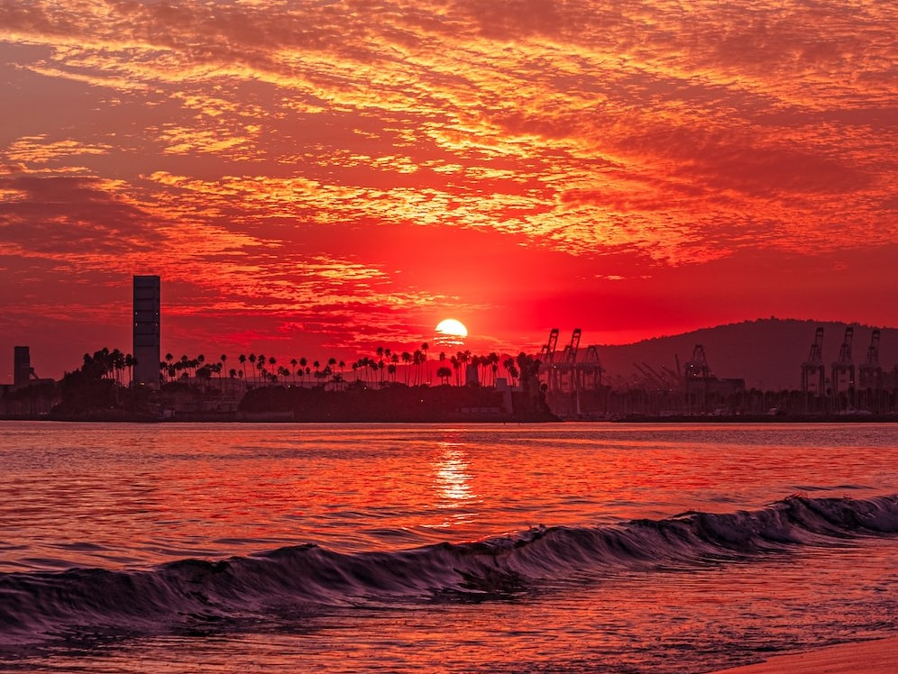

Apply a blur filter with value 0. What happens?

Now apply a blur filter of 3px. What happens now?
Apply a grayscale filter of 100%. What does the picture look like now?
Get rid of the grayscale filter and apply a brightness filter of 0. What happens?
Apply brightness of 1. What happens?
Apply a brightness filter of 0.5. What does the picture look like now?
Apply brightness with 35%. Is the picture brighter or dimmer?
Get rid of the brightness filter and apply a contrast filter of 180%. How are contrast and brightness different?
Grayscale Filter: 0%
:max_bytes(150000):strip_icc()/GettyImages-1273584292-cbcd5f85f4c646d58f7a7fa158dcaaeb.jpg)
Grayscale Filter: 50%
Grayscale Filter: 100%
Apply filter opacity to show no transparency. Paste your styling here:

Apply filter opacity to be completely transparent. Paste your styling here:
Apply opacity to reduce the image to half opacity. Paste your styling here:
Apply filter saturate to amplify the color intensity. Paste your styling here:
Apply a grayscale filter. Paste your styling here:
Apply sepia filter 100%. How is it different than greyscale?